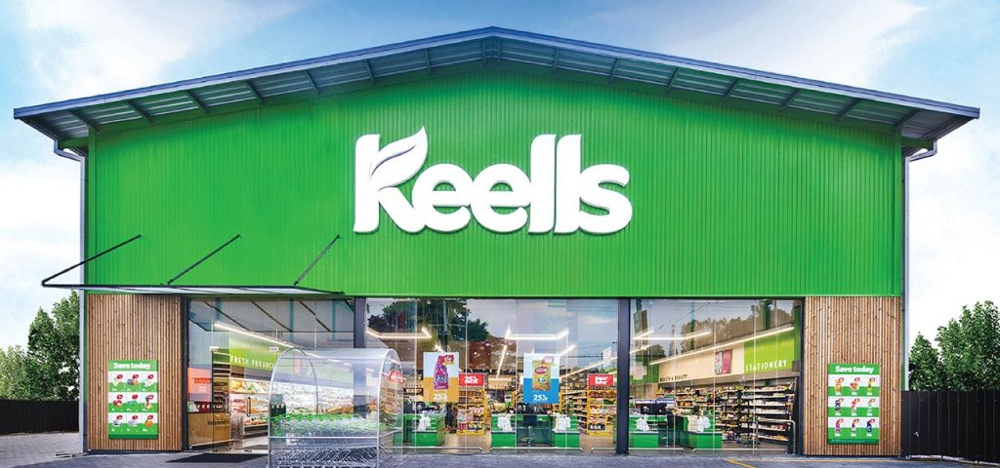

About Us
Located in the centre of Sri Lanka, NAU Groceries is a supermarket that is proudly Sri Lankan and has three active locations. We have been committed to giving our community access to the best local food, pantry essentials, and necessities since our founding in 2010. Our story started with a single Colombo store, motivated by a love of fine products and a dedication to client delight. Our steadfast commitment to these principles has allowed us to develop over time to three branches, providing ever-increasing levels of customer satisfaction.
At NAU Grocery, our goal is to provide a shopping experience that blends outstanding customer service with an extensive selection of premium goods. We take pleasure in supplying our customers with the freshest, locally grown goods available, so they may experience the best Sri Lanka has to offer. NAU Grocery is your one-stop shop for everything you need, whether you're searching for high-end skincare and makeup goods, discovering new gastronomic pleasures, or finding everyday necessities. We are eager to have you visit our businesses and to keep providing our community with superior, attentive service.
Our Services
| Service | Description | Availability |
|---|---|---|
| Same day delivery | Get your groceries delivered to your doorstep. | Available daily |
| Catering Services | Professional catering for any events or gatherings. | Appointment based only |
| Cooking classes | Customized cooking classes to fine tune your skills in the kitchen. | By appointment based |
| For more information, contact us at (555) 123-4567. | ||
Our Branches
Branch 1:
Located in the heart of Colombo, this branch offers a wide variety of groceries and services.
Address: 123 Main Street, Colombo
Phone: (011) 234-5678
Branch 2:
Located in the suburbs of Kandy, this branch offers fresh produce and a range of household items.
Address: 456 Suburb Street, Kandy
Phone: (081) 234-5678
Branch 3:
Located in Borella, this branch is known for its exceptional customer service and diverse product range.
Address: 789 City Road, Borella
Phone: (011) 345-6789